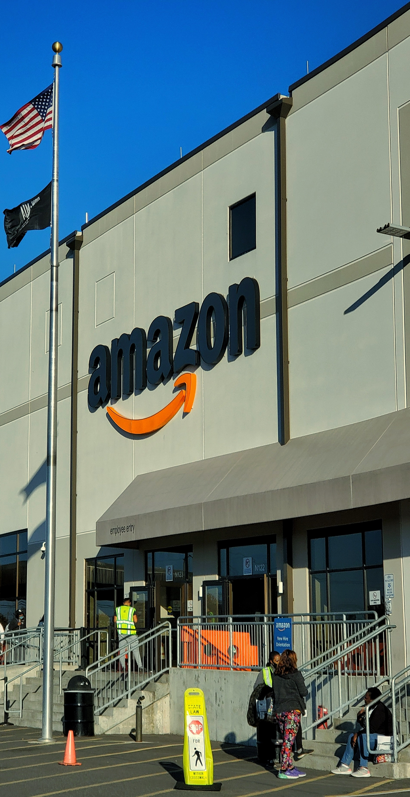

Hi, I am
Ayush Kumar Gupta
Frontend Developer
My mission is to help you build your projects with my versatility and my ability to adapt to different situations. Together, let's turn your ideas into great projects!
PROJECTS

Login Page MOD

Home Page MOD
About Me
Self-taught since my youngest age, I love learning new things to improve my skills. Very curious by nature, I love the world of the web and new technologies, what I like most is the art and the precision behind each design. With all my skills and knowledge, I will have the pleasure to devote myself fully to the development of your ideas in order to make them great projects.